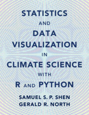

Publications



Books and Lecture Notes
- Shen, S.S.P, and G.R. North, 2023: Statistics and Data Visualization in Climate Science with R and Python, Cambridge University Press, 391pp, ISBN 978-1-108-84257-0.
- Shen, S.S.P, and R.C.J. Somerville, 2020: Python-Version Solutions Manual for Climate Mathematics: Theory and Applications, Cambridge University Press, 116pp, pdf file only.
- Shen, S.S.P, and Richard C.J. Somerville, July 2019: Climate Mathematics: Theory and Applications, Cambridge University Press, 426pp.
- Shen, S.S.P, and R.C.J. Somerville, 2019: R-Version Solutions Manual for Climate Mathematics: Theory and Applications, Cambridge University Press, 101pp, pdf file only.
- Shen, S.S.P, 2017: R Programming for Climate Data Analysis and Visualization, Lecture notes for a short course at NOAA National Centers for Environmental Information, Asheville, North Carolina, 98pp.
- Huang, N.E. and S.S.P. Shen (ed.), 2014: Hilbert-Huang Transform and Its Applications, 2nd edition, World Scientific, 425pp.
- Huang, N. E. and S. S. P. Shen (ed. ), 2005: Hilbert-Huang Transform and Its Applications, World Scientific, 360pp.
- Chetner, S., and the Agroclimatic Atlas Working Group, 2003: Agroclimatic Atlas of Alberta, 1971 to 2000. Alberta Agriculture, Food and Rural Development, Agdex071-1, Edmonton, Alberta, 89pp. (S. S. P. Shen is a lead scientist in the Working Group. )
- Shen, S. S. P., 1995: Climate Sampling Errors, Lecture Notes at University of Tokyo, 74pp.
- Shen, S. S. P., 1993: A Course on Nonlinear Waves, Springer, 327pp.
Papers in Journals
- Lafarga, D., T.Q. Bui, Y. T. Song, T.M. Smith, and S.S.P. Shen, 2023: A feasibility study of three-dimensional empirical orthogonal functions from the NASA JPL Ocean General Circulation Model: Computing, visualization and interpretation. Tellus A: Dynamic Meteorology and Oceanography, 75, 213-230. DOI: https://doi.org/10.16993/tellusa.3223
- Bui, T.Q., D. Lafarga, T.M. Smith, Y. T. Song, and S.S.P. Shen, 2023: Calculation, visualization, and interpretation of three-dimensional atmosphere-ocean coupled empirical orthogonal functions using the Reanalyses data. Theoretical and Applied Climatology, DOI: https://doi.org/10.1007/s00704-023-04513-1
- Okamura, K., T. Tang, and S.S.P. Shen, 2023: A feasibility study of using a best group fitting method to determine wind data probability distribution. Theoretical and Applied Climatology, DOI: https://doi.org/10.1007/s00704-023-04387-3.
- Nickerson, S., T. L. Tequida, and S.S.P. Shen, 2023: Teachers partner with scientists to learn the relevance of mathematics through climate research. Notices of the American Mathematical Society, 70, 614-618. DOI: https://doi.org/10.1090/noti2664
- Shen, S.S.P., J. Zambrano, A. Mohamed, T. M. Smith, and B. Huang, 2022: 4-Dimensional visual delivery (4DVD) of big climate data: A web tool that enables students to visualize and receive the Extended Reconstructed Sea Surface Temperature data in classrooms. Journal of Ocean Technology, 17, No. 4, 30-38.
- Yang, Liu, Shang-Ping Xie, Samuel S. P. Shen, Jing-Wu Liu, and Yen-Ting Hwang, 2022: Low cloud-SST feedback over the subtropical Northeast Pacific and the remote effect on ENSO variability. Journal of Climate, 35,441-452. https://doi.org/10.1175/JCLI-D-21-0902.1
- Mu, Y., T. Biggs, and S.S.P. Shen, 2021: Satellite-based precipitation estimates using a dense rain gauge network over the southwestern Brazilian Amazon: Implication for identifying trends in dry season rainfall. Atmospheric Research, 261, https://doi.org/10.1016/j.atmosres.2021.105741
- Yang, L., J.W. Liu, S.-P. Xie, and S.S.P. Shen, 2021: Transition from fog to stratus over the northwest Pacific Ocean: Large-eddy simulation. Monthly Weather Review, 149,
https://doi.org/10.1175/MWR-D-20-0420.1
- Xue, Y., et al. (S.S.P. Shen as a co-author), 2021: Impact of initialized land surface temperature and snowpack on subseasonal to seasonal prediction project, Phase I (LS4P-I): Organization and experimental design. Geoscientific Model Development, 14, 4465-4494.
https://doi.org/10.5194/gmd-14-4465-2021
- Wang, G., S.S.P. Shen, Y. Chen, Y. Bai, H. Qin, Z. Wang, B. Chen, X. Guo, M. Dai, 2021: Feasibility of reconstructing the summer basin–scale sea surface partial pressure of carbon dioxide from sparse in situ observations over the South China Sea. Earth System Science Data, 13, 1403–1417. https://doi.org/10.5194/essd-13-1403-2021
- You, Q., Z. Cai, F. Wu, Z. Jiang, N. Pepin, and S.S.P. Shen, 2021: Temperature datasets of CMIP6 models over China: evaluation, trend and uncertainty. Climate Dynamics, 57, 17-35. https://doi.org/10.1007/s00382-021-05691-2
- Roberts, E.G., M. Dai, Z. Cao. W. Zhai, L. Guo, S.S.P. Shen and C. Du, 2021: The carbonate system of the northern South China Sea: Seasonality and exchange with the western North Pacific. Progress in Oceanography, 191, https://doi.org/10.1016/j.pocean.2020.102464
- Wang, M., S-P. Xie, S. S.P. Shen and Yan Du, 2020: Rossby and Yanai modes of tropical instability waves in the equatorial Pacific Ocean and a diagnostic model for surface currents. Journal of Physical Oceanography, 50, 3009-3024, https://doi.org/10.1175/JPO-D-20-0063.1
- Shen, S.S.P., J. Pierret, I. Dorado and S. Ilawe, 2020: 4DVD visualization and delivery of the 20th Century Reanalysis data: Methods and examples. Theoretical and Applied Climatology, 142, 243-254, https://doi.org/10.1007/s00704-020-03288-z
- Tucker, T., D. Giglio, M. Scanderbeg, and S.S.P. Shen, 2020: Argovis: A web application for fast delivery, visualization and analysis of Argo data. Journal of Atmospheric and Oceanic Technology, 37, 401- 416, https://doi.org/10.1175/JTECH-D-19-0041.1
- Shen, S.S.P, 2019: A representativeness assessment of the Angell–Korshover 63-station network sampling based on reanalysis temperature data. Advances in Data Science and Adaptive Analysis, 11, https://doi.org/10.1142/S2424922X19500013
- Yao, T., Y. Xue, D. Chen, F. Chen, L. Thompson, P. Cui, T. Koike, W. K.-M. Lau, D. Lettenmaier, V. Mosbrugger, R. Zhang, B. Xu, J. Dozier, T. Gillespie, Y. Gu, S. Kang, S. Piao, S. Sugimoto, K. Ueno, L. Wang, F. Zhang, Y. Sheng, W. Guo, W. Wang, Ailikun, X. Yang, Y. Ma, S.S.P. Shen, Z. Su, F. Chen, S. Liang, Y. Liu, V. Singh, K. Yang, D. Yang, X. Zhao, Y. Zhang, Q. Li, 2019: Recent Third Pole's rapid warming accompanies cryospheric melt and water cycle intensification and interactions between monsoon and environment: multi-disciplinary approach with observation, modeling and analysis. Bulletin of the American Meteorological Society, 100, 423-444, https://doi.org/10.1175/BAMS-D-17-0057.1
- Shen, S.S.P., G. J. Clarke, T.D. Yao, B.W. Shen, 2019: Spatiotemporal variations of the 20th century Tibetan Plateau precipitation based on the monthly 2.5-degree reconstructed data, Theoretical and Applied Climatology, 135, 71-83, https://doi.org/10.1007/s00704-017-2357-5
- Zhang, G., T. Yao, W. Chen, G. Zheng, C.K. Shum, K. Yang, S. Piao, Y. Sheng, S. Yi, J. Li, C. M. O'Reilly, S. Qi, S. S.P. Shen, H. Zhang, and Y. Jia, 2018: Regional differences of lake evolution across China during 1960s−2015 and its natural and anthropogenic causes. Remote Sensing of Environment, DOI: 10.1016/j.rse.2018.11.038
- Leung, K., A. Subramanian, and S.S.P. Shen, 2018: Statistical characteristics of long-term high resolution precipitable water vapor data at Darwin. Advances in Data Science and Adaptive Analysis, DOI: 10.1142/S2424922X18500109
- Lammlein, L.J., and S.S.P. Shen, 2018: A multivariate regression reconstruction of the quasi-global annual precipitation on 1-degree grid from 1900 to 2015, Advances in Data Science and Adaptive Analysis, DOI: 10.1142/S2424922X18500080
- T. Yao, Y. Xue, D. Chen, F. Chen, L. Thompson, P. Cui, T. Koike, W. K.-M. Lau, D. Lettenmaier, V. Mosbrugger, R. Zhang, B. Xu, J. Dozier, T. Gillespie, Y. Gu, S. Kang, S. Piao, S. Sugimoto, K. Ueno, L. Wang, F. Zhang, Y. Sheng, W. Guo, W. Wang, Ailikun, X. Yang, Y. Ma, S.S.P. Shen, Z. Su, F. Chen, S. Liang, Y. Liu, V. Singh, K. Yang, D. Yang, X. Zhao, Y. Zhang, Q. Li, 2018: Recent Third Pole's rapid warming accompanies cryospheric melt and water cycle intensification and interactions between monsoon and environment: multi-disciplinary approach with observation, modeling and analysis, Bulletin of the American Meteorological Society, DOI: 10.1175/BAMS-D-17-0057.1
- Tucker, T., and S.S.P. Shen, 2018: A toolkit for snow cover area calculation and display based on the Interactive Multisensor Snow and Ice Mapping System and an example for the Tibetan Plateau region. Advances in Data Science and Adaptive Analysis,10, DOI: 10.1142/S2424922X18500031. (18 journal pages).
- Shen, S.S.P., G. Behm, T.Y. Song, and T.D. Qu, 2017: A dynamically consistent reconstruction of ocean temperature, Journal of Atmospheric and Oceanic Technology, 34, DOI: 10.1175/JTECH-D-16-0133.1.
- Shen, S.S.P., G. J. Clarke, T.D. Yao, B.W. Shen, 2017: Spatiotemporal variations of the 20th century Tibetan Plateau precipitation based on the monthly 2.5-degree reconstructed data, Theoretical and Applied Climatology, 131, DOI: https://doi.org/10.1007/s00704-017-2357-5. (13 journal pages).
- Pierret, J., and S.S.P. Shen, 2017: 4D visual delivery of big climate data: A fast web database application system. Advances in Data Science and Adaptive Analysis, accepted for publication.
- Shen, S.S.P., and F. Zhang, 2017: Advancing a multisphere approach to Third Pole research, EOS American Geophysical Union, 98, https://doi.org/10.1029/2017EO072797.
- Smith, T.M., S.S.P. Shen, and R. Ferraro, 2016: Super-ensemble statistical forecasting of monthly precipitation over the contiguous US, with improvements from ocean-area precipitation predictors, Journal of Hydrometeorology, 17: 2699-2711. DOI: http://dx.doi.org/10.1175/JHM-D-16-0018.1.
- Hua, W., S.S.P. Shen, A. Weithmann, and H. Wang, 2016: Estimation of the uncertainties in the observed surface air temperature change in China since 1951, Theoretical and Applied Climatology, DOI 10.1007/s00704-016-1836-4.
- Leung, K., M. Velado, A. Subramanian, G.J. Zhang, R.C.J. Somerville, and S.S.P. Shen, 2016: Simulation of high-resolution precipitable water data using a stochastic differential equation with a random trigger, Advances in Adaptive Data Analysis, 8, No. 2 (12 pages). DOI: 10.1142/S2424922X16500066.
- Shen, B.-W., S. Cheung, J.-L. F. Li, and Y.-L. Wu, and S. S.P. Shen, 2016: Multiscale processes of Hurricane Sandy (2012) as revealed by the parallel ensemble empirical mode decomposition and advanced visualization technology, Advances in Data Science and Adaptive Analysis, 8, No. 2 (22 pages). DOI: 10.1142/S2424922X16500054.
- Cavanaugh, N., S.S.P. Shen, 2015: A Comparison of non-Gaussian variability surface temperature trends in observed station and gridded data, J. Climate, doi: 10.1175/JCLI-D-14-00668.1.
- Curtis, C.W., and S.S.P. Shen, 2015: Three-dimensional surface water waves governed by the forced Benny-Luke equation, Studies in Applied Mathematics, DOI: 10.1111/sapm.12091.
- Clarke, G.J., and S.S.P. Shen, 2015: Hilbert-Huang transform approach to Lorenz signal separation, Advances in Adaptive Data Analysis, 7, No. 1 (17 pages). Doi:10.1142/S1793536915500041.
- Gao, J., S.S.P. Shen, T. Yao, N. Tafolla, C. Risi, and Y. He, 2015: Reconstruction of precipitation δ18O over the Tibetan Plateau since 1910, J. Geophys. Res.- Atmospheres, DOI: 10.1002/2015JD023233.
- Shen, S.S.P., O. Wied, A. Weithmann, T. Regele, B. Bailey, and J. Lawrimore, 2015: Multidecadal regimes of temperature and precipitation of the contiguous United States between 1895 and 2010 based on USHCN data and statistical inferences, Theoretical and Applied Climatology, DOI: 10.1007/s00704-015-1502-2.
- Wang, G. M. Dai, S.S.P. Shen, Y. Bai, and Y. Xu, 2014: Quantifying uncertainty sources in the gridded data of sea surface CO2 partial pressure over the East China Sea, Journal of Geophysical Research - Oceans, 119, 5181-5189. doi: 10.1002/2013JC009577.
- Shen, S.S.P., N. Tafolla, T.M. Smith, and P.A. Arkin, 2014: An estimate of sampling errors in the reconstruction of global annual precipitation from 1900-2011, J. Atmospheric Sciences, 71, 3250-3268. doi: 10.1175/JAS-D-13-0301.1.
- Shen, S.S.P., R. Yao, J. Ngo, A.M. Basist, N. Thomas, and T. Yao, 2014: Characteristics of Tibetan Plateau Snow Cover Variations Based on Daily Data during 1997-2011, Theor. Appl. Climatol., doi: 10.1007/s00704-014-1185-0.
- Cavanaugh, N., and S.S.P. Shen, 2014: Northern Hemisphere Climatology and Trends of Statistical Moments Documented from GHCN-Daily Surface Air Temperature Station Data from 1950-2010, J. Climate, 27, 5396-5410. doi: 10.1175/JCLI-D-13-00470.1.
- Leung, K., C. Rasmussen, S.S.P. Shen, and D. Zazkis, 2014: Calculus from a statistics perspective, The College Mathematics Journal, 45, 377-386. [The authors are ordered alphabetically for this article required by the journal. Shen is the corresponding author. The author order of the original manuscript (http://arxiv.org/abs/1406.2731) was Shen, Zazkis, Leung and Rasmussen.]
- Shen, S.S.P., and Q. Lin, 2014: Two hours of simplified teaching materials for direct calculus, Mathematics Teaching and Learning, No. 2, 2-1 - 2-6. Cornell University Library public access file number: arXiv:1404.0070. http://arxiv.org/abs/1404.0070.
- Hua, W., S.S.P. Shen, and H. Wang, 2014: Analysis of sampling error uncertainties and trends in daily maximum and minimum temperatures of China, Advances in Atmospheric Sciences, 31, doi: 10.1007/s00376-013-2316-8.
- Zazkis, D., C. Rasmussen, and S.S.P. Shen, 2014: A mean-based approach for teaching the concept of integration, PRIMUS (Problems, resources, and Issues in Mathematics Undergraduate Studies), 24, 116-137.
- Shen, S.S.P., M. Velado, R.C. J. Somerville and G. J. Kooperman, 2013: Probabilistic assessment of cloud fraction using Bayesian blending of independent data sets: Feasibility study of a new method, J. Geophysical Research: Atmospheres, 118, 1-13, doi:10.1002/jgrd.50408.
- Shen, S.S.P., J.-Y. Lee, and K.M. Lau, 2013: Bayesian optimal blending and credible interval estimation for satellite and ground rainfall observations, Advances in Adaptive Data Analysis, 5, 13500006-1-21, DOI: 10.1142/S1793536913500064. (21 pages)
- Ren, L., T.M. Smith, P.A. Arkin, and S.S.P. Shen, 2013: Global precipitation trends in 1900-2005 from a reconstruction and coupled model simulations. J. Geophysical Research, J. Geophysical Research: Atmospheres, 118, 1679-1689, doi.10.1002/jgrd.50212.
- Smith, T.M., S.S.P. Shen, L. Ren, and P.A. Arkin, 2013: Estimating monthly precipitation uncertainty beginning 1900, J. Atmospheric and Oceanic Tech., 30, 1107-1122.
- Shen, S. S. P., M. Bantle, A. S. Donahue, R. Wong, and C. K. Lee, 2013: EOF-MSE adaptive method to assess an acid deposition monitoring network over Alberta, Canada, Advances in Adaptive Data Analysis, 5, No. 1 1350001 (20 pages), DOI: 10.1142/S1793536913500015.
- Shen, S. S. P., D. New, T. M. Smith, and P. A. Arkin, 2012: Hilbert-Huang transform analysis of the global average monthly precipitation, Advances in Adaptive Data Analysis, 4, No. 3, 1250018 (21 pages), DOI: 10.1142/S1793536912500185.
- Smith, T. M., P. A. Arkin, L. Ren, and S. S. P. Shen, 2012: Improved reconstruction of global precipitation since 1900, J. Atmospheric and Oceanic Tech., 29, 1505-1517.
- Shen, S. S. P., C. K. Lee, and J. Lawrimore, 2012: Uncertainties, trends, and hottest and coldest years of US surface air temperature since 1895: an update based on the USHCN V2 data, J. Climate, 25, 4185-4203. DOI: 10. 1175/JCLI-11-11-00102. 1.
- Shen, S. S. P., B. Kramps, S. X. Sun, and B. Bailey, 2012: An approach to quantify the heat wave strength and price a heat wave derivative for risk hedging, Advances in Atmospheric Sciences 29, 1-9.
- Shen, S. S. P., A. B. Gurung, H.-S. Oh, T. Shu, and D. R. Easterling, 2011: The 20th century contiguous US climate changes indicated by daily data and higher statistical moments, Climatic Change 109, 287-317.
- Donahue, A. and S. S. P. Shen, 2010: Stability of hydraulic fall and sub-critical cnoidal waves in water flows over a bump, J. Engineering Mathematics 68, 197-205.
- Rupp, A. J., B. Bailey, S. S. P. Shen, C. K. Lee, and B. S. Strachan, 2010: An error analysis for the hybrid gridding of Texas daily precipitation data, Intl J. Climatology 30, 601-611. (Published online April 9, 2009, doi: 10. 1002/joc. 1917)
- Shen, S.S.P., A. Basist, and A. Howard, 2010: Structure of a digital agriculture system and agricultural risks due to climate changes, Agriculture and Agricultural Science Prodedia 1, 42-51.
- Field, R. D., G. R. van der Werf, and S. S. P. Shen, 2009: Human amplification induced biomass burning in Indonesia since 1960, Nature (Geoscience) 2, 185-188. [With the title on the cover of the issue, and a backstory at the end of the issue, p228. ]
- Field, R. D., and S. S. P. Shen, 2008: Predictability of carbon emissions from biomass burning in Indonesia from 1997 to 2006, J. Geophys. Res. 113, G04024, doi:10. 1029/2008JG000694. (17 printed pages)
- Lee, C. K., S. S. P. Shen, B. Bailey, and G. R. North, 2008: Factor analysis for El Nino signals in sea surface temperature and precipitation, Theo. Applied. Climatology 97, 195-203.
- Shen, S. S. P., H. Yin, and T. M. Smith, 2007: An estimate of the error variance of the gridded GHCN monthly surface air temperature data, J. Climate 20, 2321-2331.
- Mwale, D., T. Y. Gan, S. S. P. Shen, T. Shu, and K.-M. Kim, 2007: Wavelet empirical orthogonal functions of space-time-frequency regimes and predictability of southern Africa summer rainfall, ASCE J. Hydrologic Engineering 12, 513-521.
- Wang, A., X. B. Zeng, S. S. P. Shen, Q. C. Zeng, and R. E. Dickinson, 2006: Time scales of land surface hydrology, J. Hydrometeorology 7, 868-879.
- Lau, K. M., S. S. P. Shen, K.-M. Kim, and H. Wang, 2006: A multi-model study of the 20th century simulations of Sahel drought from the 1970s to 1990s, J. Geophys. Res. 111, D07111, doi:10. 1029/2005JD006281, 9pp.
- Basist, A., R. Hult, S. S. P. Shen, N. Thomas, and M. Basist, 2006: Microwave imaging that predicts yields, Futures magazine feature article, September issue, 50-54. (Also on the cover page of this issue. )
- Shen, S. S. P., 2006: Statistical procedures for estimating and detecting climate changes, Advances in Atmospheric Sciences 23, 61-68.
- Zeng, X. D., A. Wang, Q. C. Zeng, R. E. Dickenson, X. B. Zeng, and S. S. P. Shen, 2006: Intermediate complex models for the hydrological interactions in the atmosphere-vegetation-soil system, Advances in Atmospheric Sciences 23, 127-140.
- Zeng, Q. C., X. D. Zeng, A. Wang, R. E. Dickinson, X. B. Zeng, and S. S. P. Shen, 2005: Some studies of the hydrological intereactions in the atmosphere-soil system, Chinese J. Atmospheric Sciences 29, 7-19.
- Zeng, X. D., X. B. Zeng, S. S. P. Shen, R. E. Dickenson, and Q. C. Zeng, 2005: Vegetation-soil water interaction within a dynamical ecosystem model of grassland in semi-arid areas, Tellus 57B, 189-202.
- Shen, S. S. P., H. Yin, K. Cannon, A. Howard, S. Chetner, and T. R. Karl, 2005: Temporal and spatial changes of agroclimate in Alberta during 1901-2002, J. Appl. Meteo. 44, 1090-1105.
- Lu, H., S. S. P. Shen, and J. Huang, 2005: Characteristics of the 500hPa signal field for the rainstorms over the Middle Reaches of Yangtze River, China, Acta Meteorologica 63, 333-341.
- Xu, Z., G. Shen and S.S.P. Shen, 2005: A correction of the 2D KdV equation of Djordjevic & Redekopp in exponentially stratified fluid, Acta Mechanica Sinica 21, 346-352.
- Zhou, Y., S. Gao, and S. S. P. Shen, 2004: A diagnostic study of formation and structures of the Meiyu front system over East Asia, J. Meteo. Soc. Japan 82, 1565-1576.
- Mwale, D., T. Y. Gan, and S. S. P. Shen, 2004: A new analysis on variability and predictability of seasonal rainfall of central southern Africa for 1950-94, Int. J. Climatology 24, 1509-1530.
- Mei, M., J. So, M. Y. Li, and S. S. P. Shen, 2004: Asymptotic stability of traveling waves for Nicholson’s blowflies equation with diffusion. Proceedings of the Royal Society of Edinburgh 134A, 579-594.
- Zeng, X. D., S. S. P. Shen, X. Zeng, and R. E. Dickinson, 2004: Multiple equilibrium states and the abrupt transitions in a dynamical system of soil water interacting with vegetation, Geophys. Res. Lett. 31, L05501-4. [Reply to comments, 2005: Geophys. Res. Lett. 32, L09403. doi:10. 10. 1029/2004GL022339. ]
- Zeng, X. D., A. Wang, G. Zhao, S. S. P. Shen, X. Zeng, and Q. C. Zeng, 2004: Ecological dynamic model of grassland and its practical verification, Science in China C34, 481-486.
- Shen, S. S. P., A. N. Basist, G. Li, C. Williams, and T. R. Karl, 2004: Prediction of sea surface temperature from the Global Historical Climatology Network data, Environmetrics 15, 233-249.
- Zheng, Q., S. S. P. Shen, Y. Yuan, N. E. Huang, V. Klemas, X-. H. Yan, F. Shi, X. Zhang, Z. Zhao, X. Li, and P. Clemente-Colon, 2004: Evidence of the coexistence of upstream and downstream solitary wavetrains in the real atmosphere, International Journal of Remote Sensing 25, 4433-4440. (Also the cover page of the International Journal of Remote Sensing 25, No. 21, 4431 (2004)).
- Huang, N. E., M. L. Wu, W. Qu, S. R. Long, and S. S. P. Shen, 2003: Applications of Hilbert-Huang transform to non-stationary financial time series analysis, Applied Stochastic Models in Business and Industry 19, 245-268.
- Huang, N. E., M. L. Wu, S. R. Long, S. S. P. Shen, W. Qu, P. Gloersen, and K. L. Fan, 2003: A confidence limit for the empirical mode decomposition and Hilbert spectral analysis, Proc. Royal Soc. Lond. A 459, 2317-2345.
- He, Y., Y. Lin, S. S. P. Shen, and R. Tait, 2003: Finite element approximation for viscoelastic fluid motion problem, J. Computational and Appl. Math. 155, 201-222.
- Shen, Y. D., L. Y. Yuan, J. You, S. S. P. Shen, and Q. Yang, 2003: A dynamic approach to characterizing termination of general logic programs. ACM Transactions on Computational Logic 4, 417-430.
- Lau, W. K. M., K. M. Kim, and S. S. P. Shen, 2002: Potential predictability of seasonal precipitation over the United States from canonical ensemble correlation predictions, Geophys. Res. Lett. 29, 10. 1029.
- Shen, S. S. P., K. M. Lau, K-. M. Kim, G. Li, and A. Basist, 2002: Formulation of the canonical ensemble correlation prediction for seasonal precipitation, Chinese Journal of Atmospheric Sci. 26, 114-140.
- He, Y., Y. Lin, S. S. P. Shen, and R. Tait, 2002: On the convergence of viscoelastic fluid flows to a steady state, Advances in Differential Equations 7, 717-742.
- Shen, S. S. P., B. Shen, C. T. Ong, and Z. T. Xu, 2002: Collision of uniform soliton trains in asymmetric systems, Dynamics of Continuous, Discrete and Impulsive Systems B9, 131-138.
- Shen, S. S. P., P. Dzikowski, G. Li, and D. Griffith, 2001: Interpolation of 1961-1997 daily climate data onto Alberta polygons of ecodistrict and soil landscape of Canada, J. Applied Meteo. 40, 2162-2177.
- Basist, A., C. Williams, N. Grody, T. Ross, S. S. P. Shen, A. Chang, R. Ferraro, and M. Menne, 2001: Using the Special Sensor Microwave Imager to monitor surface wetness, J. Hydrometeorology 2, 297-308.
- Folland, C. K., N. A. Rayner, S. J. Brown, T. M. Smith, S. S. P. Shen, D. E. Parker, I. Macadam, P. D. Jones, R. N. Jones, N. Nicholls, and D. M. H. Sexton, 2001: Global temperature change and its uncertainties since 1861, Geophys. Res. Lett. 28, 2621-2624.
- Xu, Z., H. Xu, and S.S.P. Shen, 2000: Tailing wavetrain generation in precursor soliton generation in two-layer flow, Acta Mechanica Sinica 16, 1-7.
- Shen, S. S. P., T. B. Moodie, and B. Shen, 2000: Interpretation of stability and instability of the solitary waves in a forced Korteweg-de Vries system, Canadian Appl. Math. Quarterly 8, 293-303.
- Xu, Z., H. Xu, and S. S. P. Shen, 2000: Tailing wavetrain generation in precursor soliton generation in single-layer flow, Progress in Natural Science 10, 350-356.
- Wang, X., and S. S. P. Shen, 1999: Estimation of spatial degrees of freedom of a climate field, J. Climate 12, 1280-1291.
- Shen, S. S. P., and G. R. North, 1999: A simple proof of the slope stability theorem for energy balance climate model, Canadian Appl. Math. Quarterly 7, 203-215.
- Shen, S. S. P., T. M. Smith, C. F. Ropelewski, and R. E. Livezey, 1998: An optimal regional averaging method with error estimates and a test using tropical Pacific SST data, J. Climate 11, 2340-2350.
- Smith, T. M., R. E. Livezey, and S. S. P. Shen, 1998: An improved method for interpolating sparse and irregularly distributed data onto a regular grid, J. Climate 11, 1717-1729.
- Xu, Z., Y. Xu, and S.S.P. Shen, 1998: Moving velocities of precursor soliton generation in two-layer flow, Acta Mechanica Sinica, 14, 289-296.
- Shen, S. S. P., and S. Zhang, 1998: A quantitative study on the stability of quadratic delay difference systems, Computers and Mathematics with Applications 35, 1-16.
- Zwiers, F. W., and S. S. P. Shen, 1997: Errors in estimating spherical harmonic coefficients from partially sampled GCM output, Climate Dyn. 13, 703-716.
- Xu, Z., F. Shi, S. Lou, and S.S.P. Shen, 1997: Velocities of precursor soliton generation in a single layer flow, Chin. J. Oceanol. Limnol., 15, 130-136.
- Shen, S. S. P., and X. Wang, 1997: Optimal average of regional temperature with sampling error estimation, Atmosphere and Ocean 35, 147-160.
- Xu, Z. K. Wu, and S.S.P. Shen, 1997: Theoretical mean wave resistance of precursor soliton generation in two-layer flow, Acta Mechanica Sinica, 13, 1-9.
- Li, T.-H., G. R. North, and S. S. P. Shen, 1997: Aliased power of a stochastic temperature field on a sphere, J. Geophys. Res. 102, 4475-4486.
- Xu, Z., and S. S. P. Shen, 1997: Physical universals in problem of precursor soliton generation, Science in China 40, 306-314.
- Shen, S. S. P., 1996: Energy distribution for waves in transcritical flows over a bump, Wave Motion 23, 39-48.
- Xu, Z., J. Tian, and S.S.P. Shen, 1996: Theoretical amplitude and period of precursor solition generation in two-layer flow, Acta Mechanica Sinica, 12(4), 323-337.
- Kim, K.-Y., G. R. North, and S. S. P. Shen, 1996: Optimal estimation of spherical harmonic components from a sample with spatially nonuniform covariance statistics, J. Climate 9, 635-645.
- Shen, S. S. P., G. R. North, and K.-Y. Kim, 1996: Optimal estimation of the spherical harmonic components of the surface air temperature, Environmetrics 7, 261-276.
- Xu, Z., S. Lou, J. Tian, and S.S.P. Shen, 1996: NLS equation of internal waves in weakly stratified ocean, Chin. J. Oceanol. Limnol., 14, 121-127.
- Xu, Z., F. Shi, S. Lou, and S.S.P. Shen, 1996: Theoretical mean wave resistance of precursor soliton generation of single-layer flow, Chin. J. Oceanol. Limnol., 14, 330-336.
- Shen, S. S. P., R. P. Manohar, and L. Gong, 1995: Stability of the lower cusped solitary waves, Phys. Fluids A 7, 2507-2509.
- North, G. R., K. Y. Kim, S. S. P. Shen, and J. W. Hardin, 1995: Detection of forced climate signals, Part I: theory, J. Climate 8, 401-408.
- Shen, S. S. P., 1995: On the accuracy of the stationary forced Korteweg-de Vries equation as a model equation for flows over a bump, Quarterly Appl. Math. 53, 701-719.
- Shen, S. S. P., X. Wang, Y. Liang, and R. Li, 1995: Optimal weight scheme for averaging regional temperature I: Theoretical analysis, China Science Bulletin A 40, 1351-1356.
- Mazzoleni, A. P., and S. S. P. Shen, 1995: The product of chord lengths of a circle, Mathematics Magazine 68, 59-60.
- Shen, S. S. P., G. R. North, and K. Y. Kim, 1994: Spectral approach to optimal estimation of the global average temperature, J. Climate 7, 1999-2007.
- Shen, S. S. P., 1994: A simple model of reproductive mass spreading, Canadian Appl. Math. Quarterly 2, 395-412.
- North, G. R., J. B. Valdes, E. Ha, and S. S. P. Shen, 1994: The ground truth problem for satellite estimates of rain rate, J. Atmos. Ocean. Tech 11, 1035-1041.
- Gong, L., and S. S. P. Shen, 1994: Multiple supercritical solitary wave solutions of the stationary forced Korteweg-de Vries equation and their stability, SIAM J. Appl. Math. 54, 1268-1290.
- Wang, Y., S. S. P. Shen and H. Cheng, 1994: Evolution of the plastic zone near a hydraulic fracture: a numerical simulation and its implications, Canadian Geotech. J. 31, 779-787.
- Shen, S. S. P., and L. Gong, 1993: Solitary waves on a shelf, Phys. Fluids A 5, 1071-1073.
- North, G. R., S. S. P. Shen, and R. B. Upson, 1993: Sampling errors in rainfall measurements by multiple satellites, J. Appl. Meteor. 32, 399-410.
- Graves, C. E., J. B. Valdes, S. S. P. Shen, and G. R. North, 1993: Evaluation of sampling errors of precipitation from space-borne and ground sensors, J. Appl. Meteor. 32, 374-385.
- Shen, S. S. P., 1992: Forced solitary waves and hydraulic falls in two-layer flows, J. Fluid Mech. 234, 583-612.
- North, G. R., S. S. P. Shen, and J. W. Hardin, 1992: Estimation of the global mean temperature with point gauges, Environmetrics 3, 1-14.
- Hardin, J. W., G. R. North, and S. S. P. Shen, 1992: Minimum error estimates of global mean temperature through optimal arrangement of gauges, Environmetrics 3, 15-27.
- North, G. R., S. S. P. Shen, and R. B. Upson, 1991: Combining raingages with satellite measurements for optimal estimates of area-time averaged rainrates, Water Resources Res. 27, 2785-2790.
- Shen, S. S. P., 1991: Locally forced critical surface waves in channels of arbitrary cross section, J. Appl. Math. Phys. ZAMP 42, 122-138.
- Shen, S. S. P., 1990: Blocking of solitary pulses in a nonlinear fiber, Wave Motion 12, 551-557.
- Shen, S. S. P., and M. C. Shen, 1990: On a limit of subcritical free-surface flow over an obstruction, Acta Mechanica 82, 225-230.
- Shen, S. S. P., and W. L. Perry, 1990: An example of toxic mass spreading, Appl. Sci. Res. 47, 323-339.
- Valdes, J., S. Nakamoto, S. S. P. Shen, and G. R. North, 1990: Estimation of multidimensional precipitation parameters by areal estimates of oceanic rainfall, J. Geophys. Res. 95, 2101-2111.
- Shen, S. S. P., and M. C. Shen, 1990: A new equilibrium of subcritical flow over an obstruction in a channel of arbitrary cross section, Eur. J. Mech. (B/Fluids) 9, 59-74.
- Shen, S. S. P., 1989: Disturbed critical surface waves in a channel of arbitrary cross section, ZAMP J. Appl. Math. Phys. 40, 216-229.
- Shen, S. S. P., M. C. Shen and S. M. Sun, 1989: A model equation for steady surface waves over a bump, J. Engr. Math. 23, 315-323.
- Shen, S. S. P., 1987: A note on the paper “a table of the special solutions of plane elasticity problems in polar coordinates” by Pan Lizhou, Mechanics and Its Practices 20, 43-44.
- Shen, S. S. P., and M. C. Shen, 1986: On a Korteweg-de Vries equation with variable coefficients in cylindrical coordinates, Phys. Fluids 29, 1759-1760.
- Shen, S. S. P., 1985: A simple derivation of rigid-rotation formula, Euro. J. Phys. 6, 96-97.
- Shen, S. S. P., 1981: Some characteristics of the distribution of velocity and acceleration vectors of a rigid body, J. East China Engineering Institute 19, 53-59.
- Shen, S. S. P., 1980: A new derivation of the equilibrium equations of elasticity in curvilinear coordinates, J. East China Engineering Institute 18, 189-212.
Book Chapters
- Shen, S.S.P., T. Shu, N.E. Huang, Z. Wu, T.R. Karl, and D.R. Easterling, 2005: HHT analysis of the nonlinear and non-stationary annual cycle of daily surface air temperature data. In Hilbert-Huang Transform and Its Applications, edited by N.E. Huang and S.S.P. Shen, World Scientific, Singapore, pp.187-210.
- North, G.R., S.S.P. Shen and A. Basist, 2002: Global warming, in Encyclopedia of Environmentrics, John Wiley, New York, pp. 929-933.
- North, G.R., and S.S.P. Shen, 2002: Global circulation, in Encyclopedia of Environmentrics, John Wiley, New York, pp. 906-920.
- Basist, A., C. Williams, N. Grody, T. Ross, and S.S.P. Shen, 2002: Soil wetness index, in Encyclopedia of Environmentrics, John Wiley, New York, pp. 2029-2033.
Technical Reports for Government
- Shen, S. S. P., 2009: The design and assessment of the acid deposition monitoring networks in Alberta, Alberta Environment, Edmonton, Alberta, Canada, 39pp.
- Shen, S. S. P., B. Shen, N. Newland, T. Yang, H. Hill, and A. Howard, 2005: Interpolating daily precipitation and temperature data on a regular grid in Manitoba and Saskatchewan, Agriculture and Agri-Food Canada/National Agroclimate Information Service, 90pp.
- Shen, S. S. P., A. B. Gurung, H.-S. Oh, T. Shu, and D. R. Easterling, 2005: An assessment of the contiguous US climate change by higher statistical moments and GDCN data from 1901 to 2000. NOAA National Climatic Data Center, 82pp.
- Shen, S. S. P., 2004: Conceptual design of the AAFC national agroclimate data system, Agriculture and Agri-Food Canada/National Agroclimate Information Service, 48pp.
- Shen, S. S. P., H. Yin, K. Cannon, A. Howard, S. Chetner, and T. R. Karl, 2004: Temporal and spatial changes of the Algroclimate in Alberta from 1901-2002, Alberta Agriculture, Food and Rural Development, Edmonton, Alberta, Canada, 49pp.
- Shen, S. S. P., A. Howard, H. Yin, F. Khurshed, and M. Akbar, 2003: Statistical analysis of drought indices and Alberta drought monitoring, Alberta Agriculture, Food and Rural Development, Edmonton, Alberta, Canada, 46pp.
- Shen, S. S. P., K. M. Lau, K. M. Kim, and G. Li, 2001: A canonical ensemble correlation prediction model for seasonal precipitation anomaly, NASA Technical Memorandum, NASA-TM-2001-209989, 53pp.
- Shen, S. S. P., and K. Cannon, 2000: Alberta 1961-1997 climate data on EDP and SLC polygons: data derivatives and data formation for soil quality models, Alberta Agriculture, Food and Rural Development, Edmonton, Alberta, Canada, 38pp.
- Shen, S. S. P., P. Dzikowski, and G. Li, 2000: Interpolation of 1961-1997 daily climate data onto Alberta polygons of ecodistrict and soil landscape of Canada, Alberta Agriculture, Food and Rural Development, Edmonton, Alberta, Canada, 43pp.
- Shen, S. S. P., 1999: An optimal assessment of Alberta climate change, Alberta Environment, Edmonton, Alberta, Canada, 39pp.
- Shen, S. S. P., 1999: Methods of spatial interpolation of climatic data onto ecodistrict and SLC polygons, Alberta Agriculture, Food and Rural Development, Edmonton, Alberta, Canada, 28pp.
- Shen, S. S. P., 1994: An optimal program for averaging regional temperature anomalies, Atmospheric Environment Service, Environment Canada, Downsview, Ontario, Canada, 25pp.
Papers in Conference Proceedings
- Zeng, Q.C., X.D. Zeng, A.H. Wang, R.E. Dickinson, X.B. Zeng, and S.S.P. Shen, 2005: Models and numerical simulations of atmosphere-vegetation-soil interactions and ecosystem dynamics. In Computational Physics: Proceedings of the Joint Conference of ICCP6 and CCP2003. May 2005, Beijing, China, edited by X.G. Zhao, S. Jiang and X.J. Yu, Rinton Press, Paramus, New Jersey, USA, pp. 98-109.
- Wang, A.H., X.D. Zeng, X.B. Zeng, S.S.P. Shen, and Q.C. Zeng, 2005: Dynamics and numerical simulations of hydrological vegetation-soil interactions. In Computational Physics: Proceedings of the Joint Conference of ICCP6 and CCP2003. May 2005, Beijing, China, edited by X.G. Zhao, S. Jiang and X.J. Yu, Rinton Press, Paramus, New Jersey, USA, pp. 230-233.
- Zeng, X.D., S.S.P. Shen, X.B. Zeng, and Q.C. Zeng, 2005: A three-variable ecosystem model and its numerical simulations. In Computational Physics: Proceedings of the Joint Conference of ICCP6 and CCP2003. May 2005, Beijing, China, edited by X.G. Zhao, S. Jiang and X.J. Yu, Rinton Press, Paramus, New Jersey, USA, pp. 284-287.
- Shen, S.S.P., 2004: A recipe for estimation and detection of climate changes. Proceedings of the 3rd International Ocean-Atmosphere Conference, Beijing, A2.5: 1-9.
- Shen, S.S.P., Q. Zheng, S. Gao, Z. Xu, and C.T. Ong, 2004: Wu’s mass postulate and approximate solutions of the fKdV equation. Proceedings of the 23rd International Conference on Offshore Mechanics and Arctic Engineering, Vancouver, 288-297.
- Shen, B., D. Koval, and S.S.P. Shen, 1999: Modelling extreme-weather-related transmission line outages, in Proceedings of the 1999 IEEE Canadian Conference on Electrical and Computer Engineering, May 1999, Edmonton, 1271-1276.
- Shen, S.S.P., 1998: Optimal estimation of climate parameters and climate data reconstruction, in Proceedings of the Section on Statistics and the Environment, American Statistical Association, 1998, 28-32.
- Shen, S.S.P., 1996: Forced evolution equations and detection of climate change. In Differential Equations and Control Theory: Proceedings of the International Conference on Differential Equations and Control Theory, May 1994, Wuhan, China, edited by Z. Deng, Z. Liang, G. Lu and S. Ruan, 255-270.
- Shen, S.S.P., G.R. North, and J.W. Hardin, 1993: Estimation of the global average temperature. In Mathematics, Climate and Environment: Proceedings of the Summer Course on Mathematics, Climate and Environment, August 1991, Madrid, edited by J.-I. Diaz and J.-L. Lions, 307-315.
- Shen, S.S.P., 1993: Forced long critical surface waves in channels. In Free Boundary Problems in Fluid Flow with Applications: Proceedings of Vth International Conference on Free Boundary Problems, June 1990, Montreal, edited by J.M. Chadam and H. Rasmusen, 388-394.
- Shen, S.S.P., G.R. North, and J.W. Hardin, 1992: Sampling errors in estimating the global temperature with point gauges: data analysis and network planning. In Using Hydrometric Data to Detect & Monitor Climatic Change: Proceedings of the NHRI Workshop on Using Hydrometric Data to Detect & Monitor Climatic Change, April 1992, Saskatoon, edited by G.W. Kite and K.D. Harvey, 33-42.
- Shen, S.S.P., M.C. Shen, and S.M. Sun, 1989: Supercritical and subcritical solutions of a model equation for steady surface waves over a bump. In Continuum Mechanics and Its Applications: Proceedings of the IXth Annual Meeting of Canadian Applied Mathematics Society, June 1988, Burnaby, edited by G.A.C. Graham and S.K. Malik, 399-410.
Software Packages and Databases Generated by Sam Shen’s Research Group
- 4DVD, 2017: 4Dimensional Visual Delivery (4DVD) of big climate data: This is a fast data delivery system based on big data technology and cloud computing. The system can be used to deliver the massive amount of data to schools and households. The technical description of 4DVD is included in the paper by Pierret and Shen (2017).
- SOGP 1.0, 2014: Spectral Optimal Gridding for Precipitation Version 1.0: SOGP 1.0 is a spectral optimal gridding of precipitation (SOGP) Matlab toolkit Version 1.0, which is designed to reconstruct the annual or monthly precipitation anomalies [units: mm/day] for the entire globe except the polar regions south of 75°S and north of 75°N. The program is based on the paper of Shen, S.S.P., N. Tafolla, T.M. Smith, and P.A. Arkin, 2014: Multivariate regression reconstruction and its sampling error for the quasi-global annual precipitation from 1900-2011, J. Atmospheric Sciences, 71, 3250-3268. doi: 10.1175/JAS-D-13-0301.1. The product was released on October 15, 2014. The software package SOGP 1.0 for the reconstruction is also available upon request.
- TPSC-Daily 1.0, 2014: This is an Animation of Tibetan Plateau Snow Cover-Daily Version 1.0: February 4, 1997 - March 15, 2012. Animation download.
The product is produced based on the paper: Shen, S.S.P., R. Yao, J. Ngo, A.M. Basist, N. Thomas, and T. Yao, 2014: Characteristics of Tibetan Plateau snow cover variations based on daily data during 1997-2011, Theoretical and Applied Climatology, doi: 10.1007/s00704-014-1185-0. This product was released in June 2014.
- Winevo V2.0, 1997: This is a C++ software that solves the initial boundary value problems for the forced Korteweg-de Vries (fKdV) PDE equation. It has an executable version and can be installed on any computer. This product was co-authored with Bin Shen and released in 1997. The work was based on the Mathematica program of numerical solutions of fKdV equation, contained in the book of “A Course on Nonlinear Waves” by S.S.P. Shen (1993).
- Spherept V2.0, 1996: This is a C++ program that computes the optimal distribution of N points on a sphere. This product was coauthored with Bin Shen and released in 1996.
- SolitonMathematica, 1991: This is a Mathematica program that uses Backlund transform to find soliton solutions of the unforced Korteweg-de Vries equation. This product was co-authored with Gordon Sarty and released in 1991.
PATENTS
- US patent application filed in 2015: Spectral Optimal Gridding by an Improved Multivariate Regression Analysis and Sampling Error Estimation. Inventor: Samuel S.P. Shen. File No. 62/221,718.